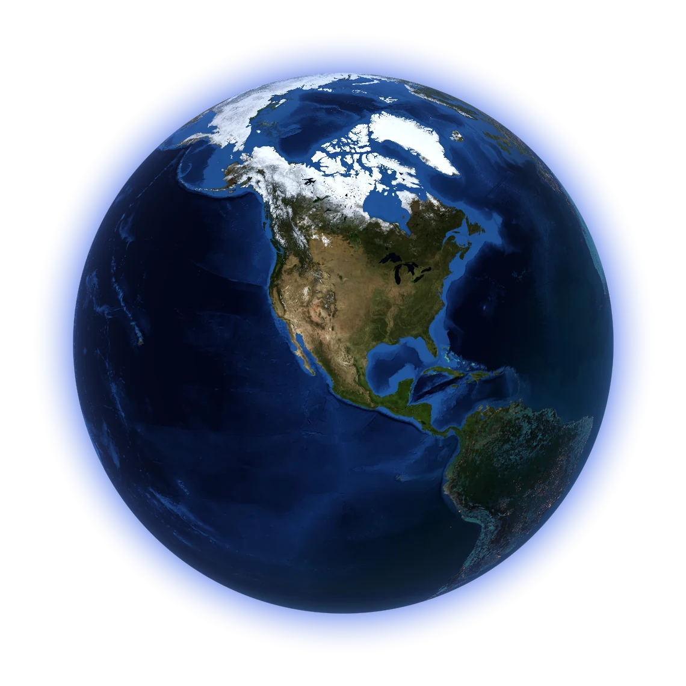

9:41
HIGHER PLACES
Find your next spot

Near youSee all
Fresh finds
9:41
HIGHER PLACES
Hotbox of the week
Rim Lakes
Vista
Pines run right to the edge of the Mogollon Rim, with a creek that falls off the top.
Take me there